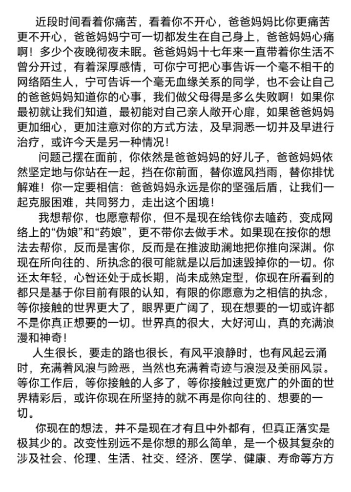
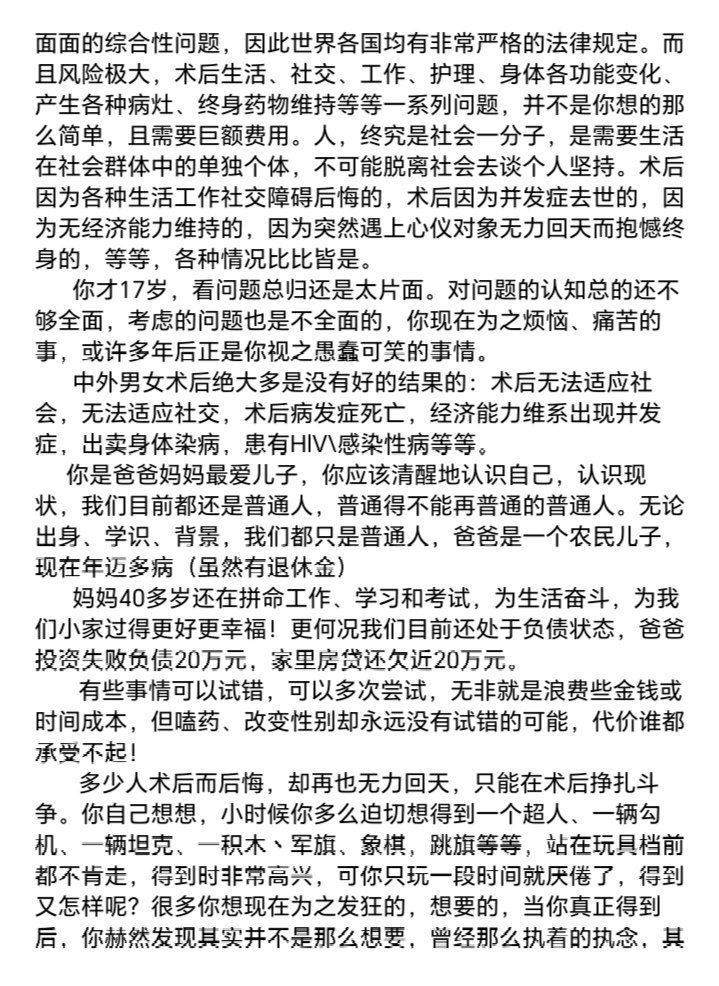

Hoshine_yosa
@Verdin14shi
@iamThuja 感觉是其他收入吧……只能说奖学金太扯了有点…不过不妨碍是真钱


传奇出生乌鲁鲁（巡飞弹只飞别人浮木）
@iamThuja
十七哪所学校会有万元奖学金？我觉得可能是因为她上的私立，年纪前面的退学费吧。
但如果这么说手术费的叫法就不成立了：因为归根到底钱又不是他的，是他爹的。
其次，我反复看他爹写的东西，我先入为主地不觉得这样的爹会在大庭广众下轻易打骂孩子
当然，以上只是怀疑。怀疑。不是事实只是猜测。 https://t.co/BWqfqoJja0 https://t.co/ljfLZ49Nih